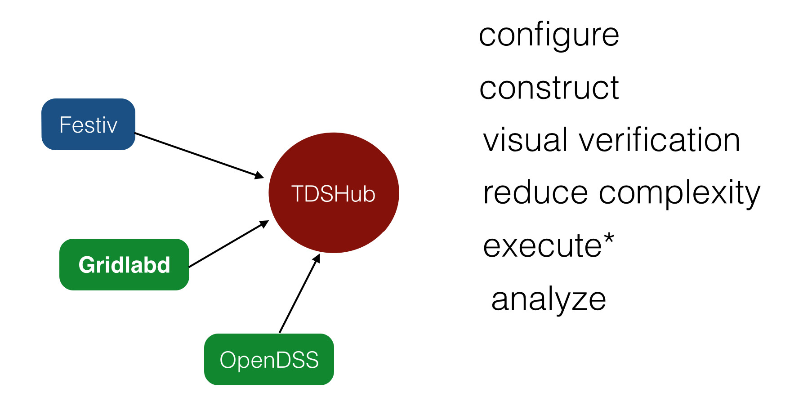
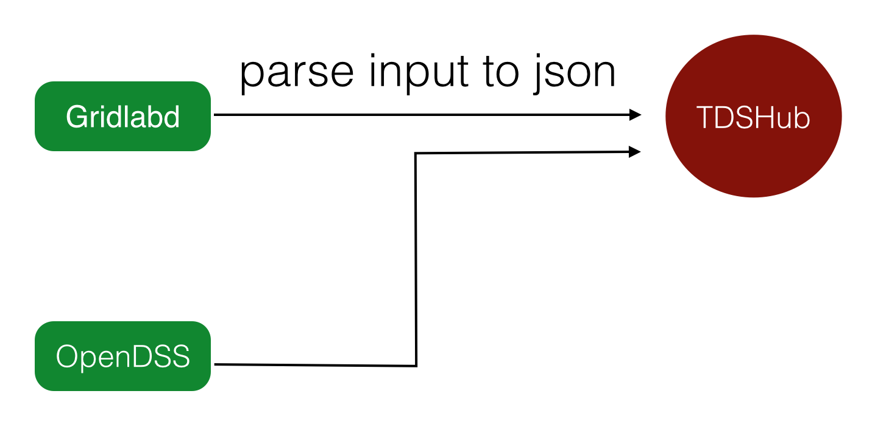

Monte Lunacek
National Renewable Energy Lab
Enables the configuration, visual verification, execution*, and analysis of power flow problems.
Networkx graph, dictionary, Pandas dataframe
Concern
def names(self, object=None):
nodes = self.graph.node.values()
if kind:
return (x['name'] for x nodes if x['object'] == object )
return (x['name'] for x in nodes)